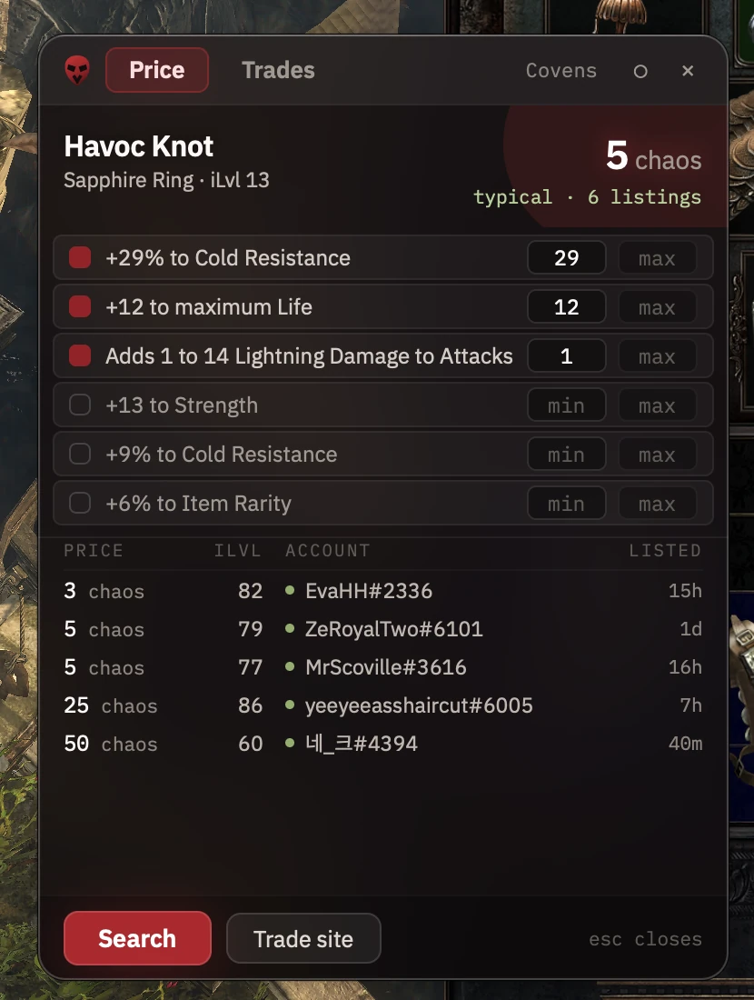

ExileWorth guide
How to check PoE 1 item prices on Mac
Hover over an item in Path of Exile 1 and press Control + D to open the price checker on Mac. The overlay shows asking prices for comparable items in your league while you stay in the game.
Check an item from the game
First install ExileWorth and enable Accessibility. With Path of Exile in Windowed or Windowed Fullscreen mode, hover an inventory item and press Ctrl + D.
ExileWorth copies the advanced item description, parses it locally and searches the official Path of Exile trade service. The current parser expects English item text.
Choose the right league
Check the league selection before comparing prices. Standard and a challenge league have different markets; a listing in another league is not a useful comparison for your item. Select the league your character plays in.
Read comparable listings
The overlay shows asking prices from trade listings, including the seller, item level and listing age. Compare several similar items rather than copying the cheapest price.
Asking prices are not completed sale prices. An unusually cheap listing may not represent the wider market. Look at the item’s rolls, the age of the listing and the currency being asked before deciding on a price.

Refine the modifiers that matter
Press Ctrl + Option + D to keep the panel open. Select relevant modifiers and edit the minimum input beside each one to find closer comparisons. ExileWorth selects a few strong modifiers initially; those selections are a starting point.
For example, when comparing energy-shield boots, an energy-shield total can be more useful than requiring every individual roll. Adding too many requirements can hide otherwise comparable items. If results are empty, loosen a range or deselect a less important modifier.
The compact preset menu offers Exact, −5%, −10% and −20%. Presets adjust checked minimums from the original item values, rather than repeatedly reducing an already edited value. For example, −10% changes 80 life to a minimum of 72. Press Search to refresh prices; your manual search keeps those minimums. Trade site then opens the resulting query.
Total res replaces individual fire, cold and lightning requirements with one total elemental resistance filter. Hover its information label for the breakdown. Click Total res again to return to individual requirements.
Follow currency price history
Open Currency in the desktop app. Both history selectors are searchable across the 27 supported currencies. Change either side to inspect another pair, then choose 24h, 7d or 30d and inspect a chart point for its date, rate and traded quantities.
The chart uses GGG’s completed-hour exchange trades, not the current asking prices listed below it. The 24-hour view samples every completed hour. Longer views sample hourly digests daily and include the latest completed hour. Gaps mean no recorded data; the percentage change is between the available samples. A rarely traded pair may have no history.
A practical comparison: the Havoc Knot example
In the screenshot above, start with the selected modifiers for Havoc Knot and read several Chaos Orb listings. Compare the modifier ranges and item level with your own item. A similar name or base alone does not make two items equivalent.
- Confirm that your character and the listings use the same league.
- Keep the modifiers that explain why someone would buy the item; remove unrelated requirements that leave too few comparisons.
- Compare multiple asking prices in the same currency. An unusually cheap listing or an old listing is a reason to look more closely, not a guaranteed sale value.
- Change one filter at a time and search again. If the results change substantially, that modifier is affecting your comparison.
These steps help you choose an asking price; ExileWorth does not confirm completed trades. For Windows shortcuts and setup, use the Windows guide.
Useful default shortcuts
- Ctrl + D
- Price-check the hovered item. The panel closes when you click elsewhere.
- Ctrl + Option + D
- Price-check and keep the panel open for filter changes.
- Shift + Space
- Show or hide the panel.
- Esc
- Close the panel.
Shortcuts work only while Path of Exile is the foreground app. You can rebind shortcuts in Settings. If a shortcut fails or results do not load, follow the troubleshooting guide.